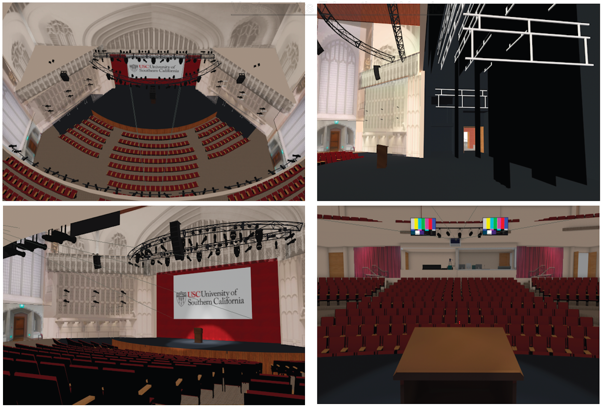
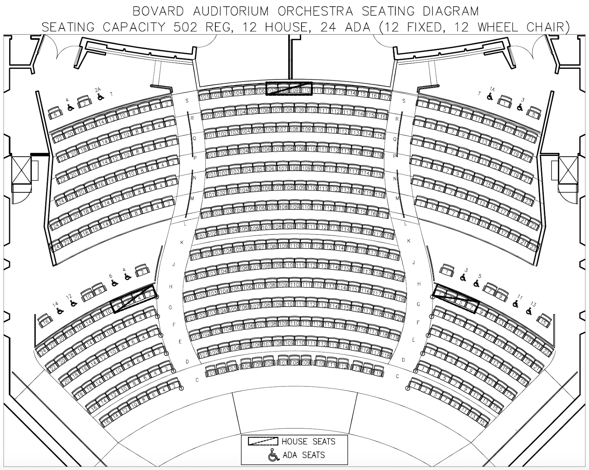
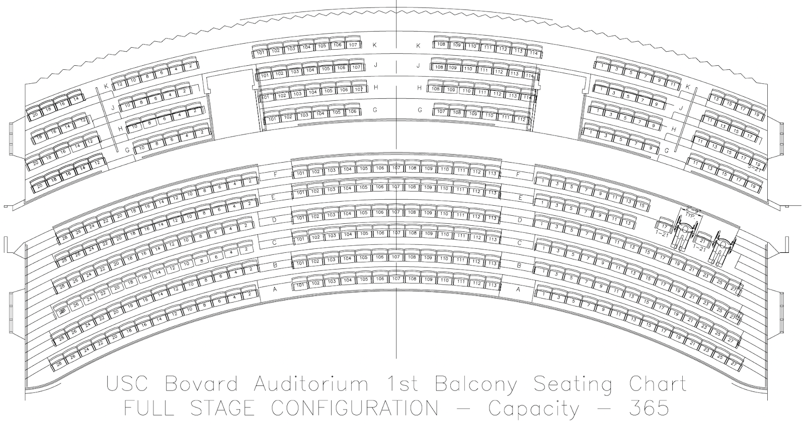
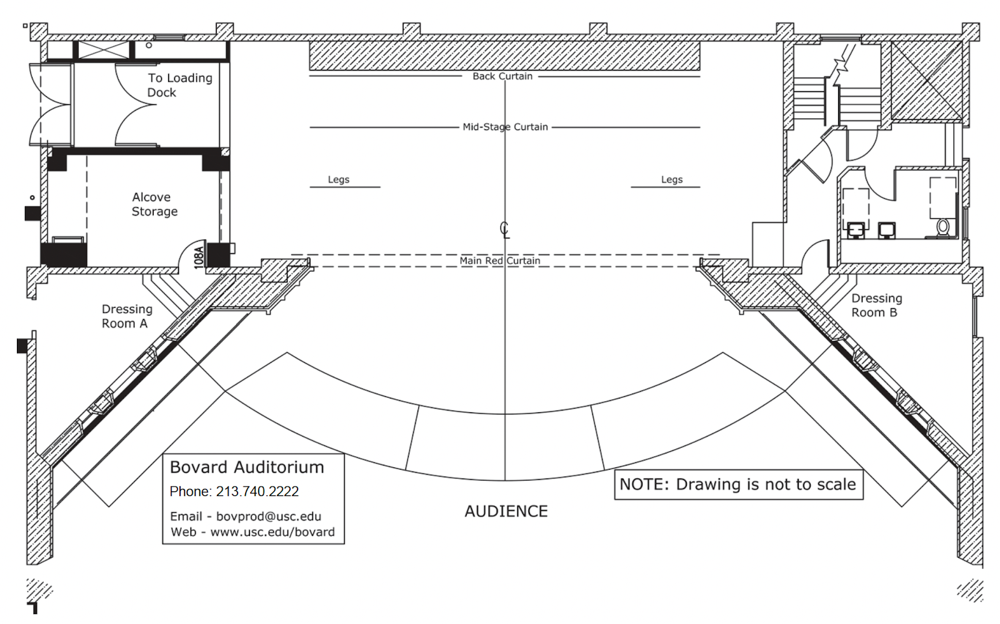

For questions about accessibility, please contact the accessibility chairs (Daniel Seita and Guangyao Shi) at: seita@usc.edu and shig@usc.edu.
The conference will be held at the campus of the University of Southern California.
Accommodations can be requested by contacting the accessibility chairs. We are committed to making RSS a welcoming conference for researchers with disabilities and will do our best to honor requests. Please submit requests as early as possible (ideally by the early registration deadline) for the best chance of receiving your preferred accommodation.
RSS will be held in several buildings over the course of the conference. The main building is the Bovard Auditorium, which will host the main conference. Venue Name: Bovard Auditorium Venue Phone: T: +1(213) 764-4943 Venue Email: bovprod@usc.edu Venue Contact: Cynthia Tucker (Trojan Event Services) +1(213) 821-1670
Venue map with some accessibility information: Home - USC Campus Map USC accessibility information (student-focused, but may have useful information about the campus): https://accessibility.usc.edu/
The following areas in Bovard are wheelchair accessible:
Areas that are not wheelchair accessible in Bovard include:
All floors are accessible by elevator, and all rooms are accessible for people with disabilities. The student volunteers or front desk staff in Bovard Auditorium will gladly assist you in finding the right room.
Breastfeeding: Designated lactation rooms at USC can be found here.
Emergency Evacuation: In the event of an emergency:
Restroom Directions and Access: There are three disabled toilets in the Bovard Auditorium. Two are on the south side of the auditorium, and one is on the north side. All three are gender-neutral.
Map of the venue:
Render view:

Bovard Auditorium orchestra seating diagram:

Bovard Auditorium 1st balcony seating diagram:

The hostess or front desk staff in Bovard Auditorium will gladly assist you in finding the right room. Visitors who need special assistance can request help from a student volunteer. Some student volunteers will be available at the conference, but requests for dedicated assistance from a student volunteer should be submitted to the accessibility chairs before the early registration deadline.
The session presentations will take place on the stage at Bovard Auditorium. The stage is wheelchair accessible. The presenters will stand at a podium. If you are a wheelchair user, please contact the accessibility chairs in advance, and our volunteers will help you move to the stage and set up your laptop.
Stage diagram:

Microphones will be used for both speakers and for the question-and-answer sessions.
We will add more details here when they are available.
If you need urgent (medical) help or are faced with a life-threatening situation, you can always call the national emergency number 911. If you need help, but it is not an emergency, then call 213-740-4321 USC Department of Public Safety (DPS).
We are currently working on exploring options for a smoking area, breastfeeding area, and quiet area. If you need one of these spaces, please get in touch with the accessibility chairs.
Smoke-free Areas: The conference center is located on the USC campus, which is completely smoke-free by law.
The links for nearby facilities are given as follows.
Public transit is moderately accessible for wheelchair users. LA has a metro system with several stations that stop near campus. You can check this for more information: https://www.metro.net/riding/schedules-2/ and https://www.metro.net/riding/riders-disabilities/.
Details on how to use the metro in LA can be found in https://www.metro.net/riding/guide/how-ride-rail/.
Ride-sharing (Uber and Lyft) is available in LA.